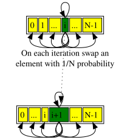
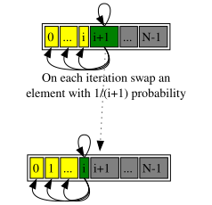
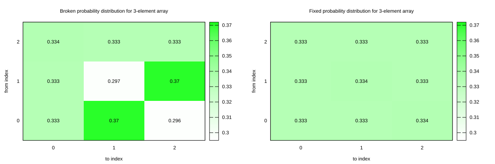
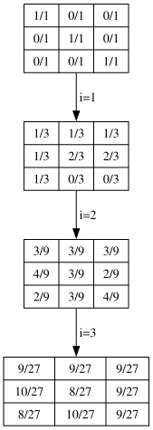
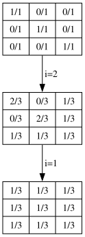
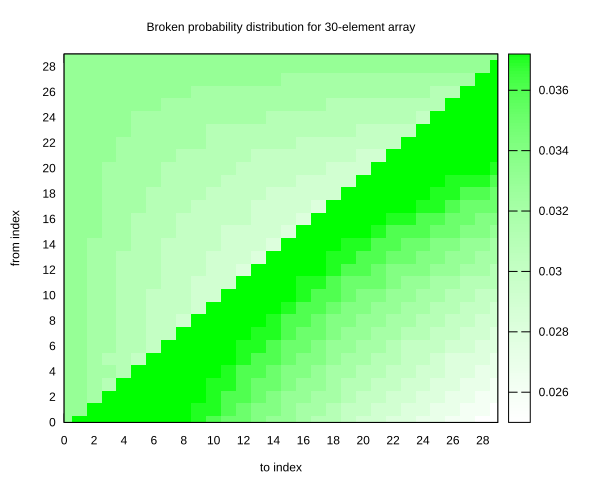

probabilities are hard
make --shuffle background
A while ago I added --shuffle
mode to GNU make to shake out missing dependencies in build rules of
make-based build systems. It managed to find
a few bugs since.
the shuffling algorithm
The core function of --shuffle is to generate one random permutation
of prerequisites for a target. I did not try to implement anything
special. I searched for "random shuffle" and got
Fisher–Yates shuffle
link from wikipedia, skimmed the page and came up with this algorithm:
/* Shuffle array elements using RAND(). */
static void
random_shuffle_array (void **a, size_t len)
{
size_t i;
for (i = 0; i < len; i++)
{
void *t;
/* Pick random element and swap. */
unsigned int j = rand () % len;
if (i == j)
continue;
/* Swap. */
t = a[i];
a[i] = a[j];
a[j] = t;
}
}
The diagram of a single step looks this way:

The implementation looked so natural: we attempt to shuffle each element
with another element chosen randomly using equal probability (assuming
rand () % len is unbiased). At least it seemed to produce random
results.
Quiz question: do you see the bug in this implementation?
This version was shipped in make-4.4.1.
I ran make from git against nixpkgs and discovered a ton of
parallelism bugs. I could not be happier than that. I never got to
actual testing the quality of permutation probabilities.
bias in initial implementation
Artem Klimov had a closer look at it and discovered a bug in the
algorithm above! The algorithm has a common implementation error for
Fisher–Yates
documented
on the very page I looked at before /o\. Artem demonstrated problems of
permutation quality on the following trivial Makefile:
all: test1 test2 test3 test4 test5 test6 test7 test8;
test%:
mkdir -p tests
echo $@ > tests/$@
test8:
# no mkdir
echo 'override' > tests/$@
This test was supposed to fail 12.5% of the time in --shuffle mode:
only when test8 is scheduled as the first to execute. Alas the test
when ran over thousands runs failed with 10.1% probability. That is
2% too low.
Artem also provided a fixed version of the shuffle implementation:
static void
random_shuffle_array (void **a, size_t len)
{
size_t i;
for (i = len - 1; i >= 1; i--)
{
void *t;
/* Pick random element and swap. */
unsigned int j = make_rand () % (i + 1);
/* Swap. */
t = a[i];
a[i] = a[j];
a[j] = t;
}
}
The diagram of a single step looks this way:

Note how this version makes sure that shuffled indices ("gray" color) never gets considered for future shuffle iterations.
At least for me it's more obvious to see why this algorithm does not introduce any biases. But then again I did not suspect problems in the previous one either. I realized I don't have a good intuition on why the initial algorithm manages to produce biases. Where does bias come from if we pick the target element with equal probability from all the elements available?
a simple test
To get the idea how the bias looks like I wrote a tiny program:
// $ cat a.c
#include <stdio.h>
#include <stdlib.h>
#include <string.h>
#include <time.h>
#define LEN 3
static int a[LEN];
static void random_shuffle_array (void) {
for (size_t i = 0; i < LEN; i++) {
unsigned int j = rand () % LEN;
int t = a[i]; a[i] = a[j]; a[j] = t;
}
}
static void random_shuffle_array_fixed (void) {
for (size_t i = LEN - 1; i >= 1; i--) {
unsigned int j = rand () % (i + 1);
int t = a[i]; a[i] = a[j]; a[j] = t;
}
}
static void do_test(const char * name, void(*shuffler)(void)) {
size_t hist[LEN][LEN];
memset(hist, 0, sizeof(hist));
size_t niters = 10000000;
printf("%s shuffle probability over %zu iterations:\n", name, niters);
for (size_t iter = 0; iter < niters; ++iter) {
// Initialize array `a` with { `0`, ..., `LEN - 1` }.
for (size_t i = 0; i < LEN; ++i) a[i] = i;
shuffler ();
for (size_t i = 0; i < LEN; ++i) hist[i][a[i]] += 1;
}
int prec_digits = 3; /* 0.??? */
int cell_width = 3 + prec_digits; /* " 0.???" */
printf("%*s ", cell_width, "");
for (size_t j = 0; j < LEN; ++j)
printf("%*zu", cell_width, j);
puts("");
for (size_t i = 0; i < LEN; ++i) {
printf("%*zu |", cell_width, i);
for (size_t j = 0; j < LEN; ++j)
printf(" %.*f", prec_digits, (double)(hist[i][j]) / (double)(niters));
puts("");
}
}
int main() {
srand(time(NULL));
do_test("broken", &random_shuffle_array);
puts("");
do_test("fixed", &random_shuffle_array_fixed);
}
Here the program implement both current (broken) and new (fixed) shuffle
implementations. The histogram is collected over 10 million runs.
Then it prints a probability of each element to be found at a location.
We shuffle an array of LEN = 3 elements: { 0, 1, 2, }.
Here is the output of the program:
$ gcc a.c -o a -O2 -Wall && ./a
broken shuffle probability over 10000000 iterations:
0 1 2
0 | 0.333 0.370 0.296
1 | 0.333 0.297 0.370
2 | 0.334 0.333 0.333
fixed shuffle probability over 10000000 iterations:
0 1 2
0 | 0.333 0.333 0.334
1 | 0.333 0.334 0.333
2 | 0.333 0.333 0.333
Here the program tells us that:
- broken version of the shuffle moves element
0to1position37%of the time - broken version moves element
0to2position29.6%of the time - fixed version is much closed to uniform distribution and has roughly
33.3%0->1and0->2probabilities
The same data above in plots:

a bit of arithmetic
To get a bit better understanding of the bias let's get exact probability value for each element move for 3-element array.
broken version
To recap the implementation we are looking at here is:
void random_shuffle_array (void) {
for (size_t i = 0; i < LEN; i++) {
unsigned int j = rand () % LEN;
int t = a[i]; a[i] = a[j]; a[j] = t;
}
}
Let's start from broken shuffle with 1/(N+1) shuffle probability.
Our initial array state is { 0, 1, 2, } with probability 1/1
(or 100%) for each already assigned value:
- probability at index
0:- value
0:1/1 - value
1:0/1 - value
2:0/1
- value
- probability at index
1:- value
0:0/1 - value
1:1/1 - value
2:0/1
- value
- probability at index
2:- value
0:0/1 - value
1:0/1 - value
2:1/1
- value
On each iteration i we perform the actions below:
- at
iposition:1/3probability of swapping any of the possible elements - at non-
ipositions:2/3probability of keeping and old element (and1/3probability of absorbing value atiposition mentioned in the previous bullet)
Thus after first shuffle step at i=0 our probability state will be:
- probability at index
0:- value
0:1/3(was1.0) - value
1:1/3(was0.0) - value
2:1/3(was0.0)
- value
- probability at index
1:- value
0:1/3(was0.0) - value
1:2/3(was1.0) - value
2:0/3(was0.0)
- value
- probability at index
2:- value
0:1/3(was0.0) - value
1:0/3(was0.0) - value
2:2/3(was1.0)
- value
So far so good: element 0 has even probability among all 3 elements,
and elements 1 and 2 decreased their initial probabilities from 1/1
down to 2/3.
Let's trace through next i=1 step. After that the updated state will be:
- probability at index
0:- value
0:3/9(was1/3) - value
1:4/9(was1/3) - value
2:2/9(was1/3)
- value
- probability at index
1:- value
0:3/9(was1/3) - value
1:3/9(was2/3) - value
2:3/9(was0/3)
- value
- probability at index
2:- value
0:3/9(was1/3) - value
1:2/9(was0/3) - value
2:4/9(was2/3)
- value
Again, magically current (i=1) element got perfect balance. Zero
probabilities are gone by now.
Final i=2 step yields this:
- probability at index
0:- value
0:9/27(was3/9) - value
1:10/27(was4/9) - value
2:8/27(was2/9)
- value
- probability at index
1:- value
0:9/27(was3/9) - value
1:8/27(was3/9) - value
2:10/27(was3/9)
- value
- probability at index
2:- value
0:9/27(was3/9) - value
1:9/27(was2/9) - value
2:9/27(was4/9)
- value
The same state sequence in diagrams:

Note that final probabilities differ slightly: 8/27, 9/27 and 10/27
are probabilities where all should have been 9/27 (or 1/3). This
matches observed values above!
The bias comes from the fact that each shuffle step affects probabilities of all cells, not just immediately picked cells for a particular shuffle. That was very hard to grasp for me just by glancing at the algorithm!
Fixed version
To recap the implementation we are looking at here is:
void random_shuffle_array_fixed (void) {
for (size_t i = LEN - 1; i >= 1; i--) {
unsigned int j = rand () % (i + 1);
int t = a[i]; a[i] = a[j]; a[j] = t;
}
}
Now let's look at a shuffle with 1/(i+1) probability.
Our initial state is the same { 0, 1, 2, } with probabilities 1/1:
- probability at index
0:- value
0:1/1 - value
1:0/1 - value
2:0/1
- value
- probability at index
1:- value
0:0/1 - value
1:1/1 - value
2:0/1
- value
- probability at index
2:- value
0:0/1 - value
1:0/1 - value
2:1/1
- value
As the algorithm iterated over the array backwards we start from i=2
(N=3).
- probability at index
0:- value
0:2/3(was1/1) - value
1:0/3(was0/1) - value
2:1/3(was0/1)
- value
- probability at index
1:- value
0:0/3(was0/1) - value
1:2/3(was1/1) - value
2:1/3(was0/1)
- value
- probability at index
2:- value
0:1/3(was0/1) - value
1:1/3(was0/1) - value
2:1/3(was1/1)
- value
As expected the probabilities are the mirror image of the first step of the broken implementation.
The next step though is a bit different: i=1 (N=2). It effectively
averages probabilities at index 0 and index 1.
- probability at index
0:- value
0:1/3(was2/3) - value
1:1/3(was0/3) - value
2:1/3(was1/3)
- value
- probability at index
1:- value
0:1/3(was0/3) - value
1:1/3(was2/3) - value
2:1/3(was1/3)
- value
- probability at index
2(unchanged):- value
0:1/3 - value
1:1/3 - value
2:1/3
- value
Or the same in diagrams:

The series are a lot simpler than the broken version: on each step handled element always ends up with identical expected probabilities. Its so much simpler!
30-element bonus
Let's look at the probability table for an array of 30-elements. The
only change I did for the program above is to change LEN from 3 to
30:

This plot shows a curious i == j cut off line where probability changes
drastically:
15->15(or anyi->i) shuffle probability is lowest and is about2.8%15->16(or anyi->i+1) shuffle probability is highest and is about4.0%
make --shuffle bias fix
I posted Artem's fix upstream for inclusion as this email:
--- a/src/shuffle.c
+++ b/src/shuffle.c
@@ -104,12 +104,16 @@ static void
random_shuffle_array (void **a, size_t len)
{
size_t i;
- for (i = 0; i < len; i++)
+
+ if (len <= 1)
+ return;
+
+ for (i = len - 1; i >= 1; i--)
{
void *t;
/* Pick random element and swap. */
- unsigned int j = make_rand () % len;
+ unsigned int j = make_rand () % (i + 1);
if (i == j)
continue;
parting words
Artem Klimov found, fixed and explained the bias in make --shuffle
implementation. Thank you, Artem!
Probabilities are hard! I managed to get wrong seemingly very simple
algorithm. The bias is not too bad: make --shuffle is still able to
produce all possible permutations of the targets. But some of them are
slightly less frequent than the others.
The bias has a curious structure:
- least likely permutations candidate is
i->i"identity" shuffle - most likely permutation candidate is
i->i+1"right shift" shuffle
At least the initial implementation was not completely broken and still was able to generate all permutations.
With luck the fix
will be accepted upstream and we will get more fair --shuffle mode.
Have fun!